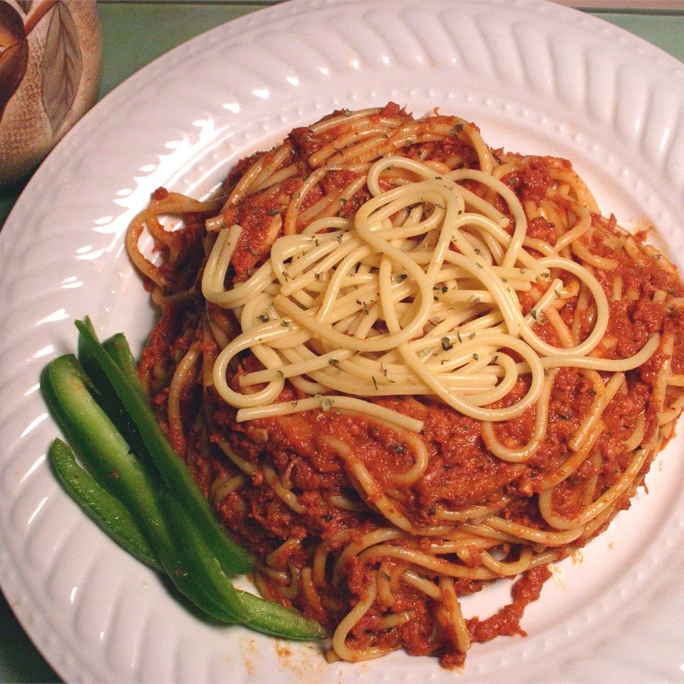

Spaghetti with Corned Beef

Quick and easy spaghetti using canned corned beef and bottled spaghetti sauce. Delicious! For added nutrition, add a can of mixed vegetables or cut-up fresh vegetable, such as chopped onion or green peppers and tomatoes.
Ingredients
- 8 ounces spaghetti
- 1 (12 ounce) can corned beef
- 1 cup spaghetti sauce
- 1 cube chicken bouillon
- 1 teaspoon Italian seasoning
- ½ teaspoon garlic powder (Optional)
- ½ tablespoon dried minced onion (Optional)
Steps
- Dissolve bouillon in boiling water. Cut spaghetti noodles in half and add to boiling water until done.
- Over medium heat empty can of corned beef onto a skillet. Add spaghetti sauce to meat. Stir until heated; corned beef will come apart and a thick sauce will form. If desired, add Italian seasoning, garlic powder, dry onion, or any other spices.
- Once noodles are done, drain and combine with corned beef sauce.